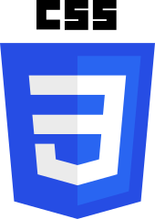
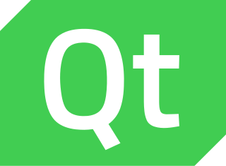
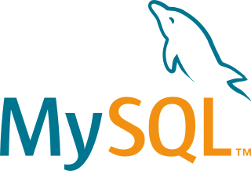

Skills
-

- 
-

-

- 
- 
Gerar Termos de Responsabilidade através de HTML/CSS.

Explore as diversas versões do Homem-Aranha em realidades paralelas.
Veja os status e informações de seus Pokemons favoritos com a Pokedex.
Uma jornada para quem não tem medo do desconhecido.
Jogo de cartas com a temática de Yu-Gi-Oh no estilo Pedra, Papel e Tesoura.
Um pequeno jogo da memória usando Emojis como as cartas.
Um simulador de piano interativo, permitindo aos usuários tocar músicas virtuais.
Um jogo divertido inspirado no filme Detona Ralph, onde você precisa martelar o personagem que surge na tela.
Prazer, eu sou o Endryl Richard Monteiro, amante da Tecnologia, das Artes e dos Games (meu gênero favorito é RTS/MOBA). A primeira vez que tive contato com a programação foi na minha adolescência (lâ por meados de 2010) com VB.Net, onde fiz um pequeno browser para jogar o Runescape em FullScreen (na época era só para membros). Atualmente estou cursando ADS na PUCPR. Como pessoa, sou alguém que sempre está buscando aprender mais e continuar sempre atualizado.
Estou disponível para novos projetos e para conexões no Linkedin. Me contate em meu WhatsApp, Linkedin ou e-mail.